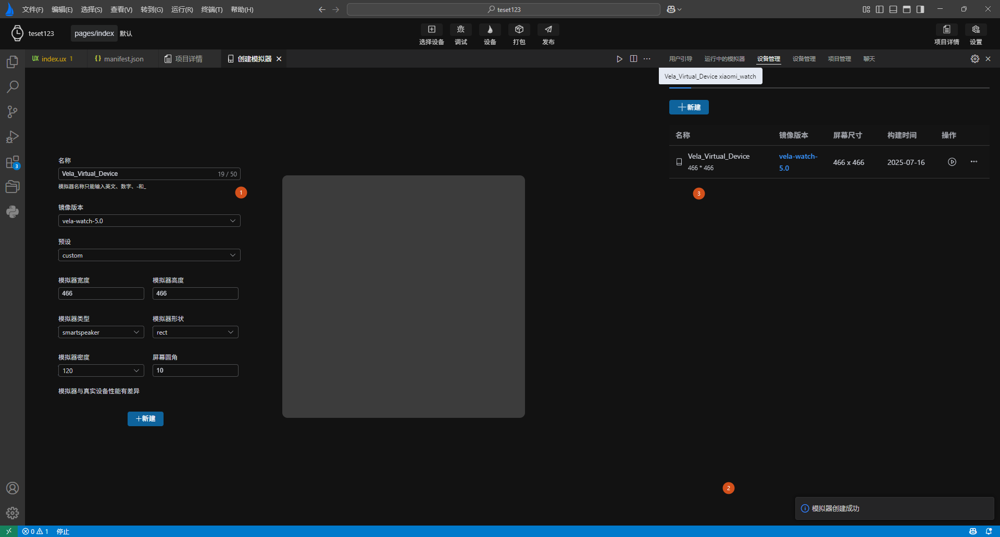

# 多屏适配
为了提升开发者开发体验，AIoT-IDE内置了****功能，可将一套代码跑在多个不同的设备屏幕上，以测试在不同屏幕上的适配效果。
# 多设备模拟器创建
为了还原最真实的多屏适配开发场景，AIoT-IDE提供了多个不同设备尺寸配置的模拟器和不同的镜像版本，以便在多种设备，不同镜像系统上测试应用。
目前提供三种镜像可供选择
vela-miwear-watch-5.0vela5.0稳定发布版本vela-miwear-watch-4.0vela4.0稳定发布版本vela-watch-4.0vela开发版本
目前提供六种不同屏幕尺寸的设备可供创建：

xiaomiWatch 466*466

redmiWatch

xiaomiBand

xiaomiBandpro

xiaomi10Band

xiaomiSoundMini
目前创建模拟器时，vela-miwear-watch-5.0和vela-miwear-watch-4.0只支持xiaomiWatch(466*466)尺寸一种设备，vela-watch-4.0支持上面全部设备类型，并且可自定义设备类型进行创建。
注意
模拟器与真实设备之间是有性能差异的
# 自定义模拟器
此外，为了支持更多尺寸的设备，创建模拟器时还可以选择custom自定义模拟器时，提供以下自定义配置：
- 1.可自定义模拟器宽高(宽高小于800大于100)，模拟器形状，模拟器密度等操作。
- 2.可自定义并设置模拟器类型，目前主要为watch，band，smartspeaker
- 3.可自定义模拟器形状，目前主要有两种形状圆形和矩形，矩形可自定义圆角
- 4.可自定义模拟器屏幕dpi

点击底部新建按钮，完成模拟器创建后，AIoT-IDE右下角会弹出创建成功提示，设备管理页面会实时更新创建的模拟器。

# 多屏预览
在创建完不同设备类型的模拟器后，通过调试或运行按钮启动模拟器时，选择对应不同设备的模拟器点击确定，即可同时运行。

运行成功后，模拟器预览页将出现不同设备屏幕的预览效果

# 自定义模拟器皮肤
此外，如果用户不仅仅满足于自定义模拟器的显示效果，希望能更逼真的预览模拟器设备，我们还提供了自定义皮肤的功能。
# Vela 模拟器皮肤组
制作一款皮肤共需要两张图片和一个配置文件：
background.png是设备主体图，要求屏幕区域为黑色foreground.png用于遮挡模拟器画面以外的部分。- layout配置文件，主要是用来配置皮肤所需的
background.png，foreground.png布局信息

其中foreground.png 一般由背景图片中扣出模拟器画面部分并将屏幕部分修改为透明色。没有 foreground.png 与有 foreground.png 的对比如下:

未配置foreground.png

配置了foreground.png
# Layout 文件的制作
拷贝以下代码并按照注释修改信息即可，其余部分保持不变
parts {
device {
display {
# 模拟器尺寸
width 466
# 模拟器尺寸
height 466
# x和y填 0
x 0
y 0
}
}
portrait {
background {
# 背景图片的名称
image background.png
}
foreground {
# 前景图片的名称
mask foreground.png
}
}
}
layouts {
portrait {
// 整个皮肤的大小，一般使用背景图片的像素尺寸
width 572
height 938
event EV_SW:0:1
part1 {
name portrait
x 0
y 0
}
part2 {
name device
# 前景图片从背景图片中扣图时的起始坐标，以左上角为0，0计算
x 54
y 236
}
}
}
// 将会在创建模拟器时透传给底层配置的字段
props {
// 屏幕形状。可选值： circle（圆形）、rect(矩形)、pill-shaped（胶囊形屏eg: 全面屏手环）
shape circle
// 屏幕密度，可选值： ['120'，'140'，'160'，'180'，'213'，'240'，'280'，'320'，'340'，'360'，'400'，'420'，'440'，'480'，'560'，'640']
density 320
// 设备类型，可选值：phone（手机）、watch（手表）、pad（平板）、car（车机）、tv（电视）、band（手环）smartspeaker（音响），默认watch
flavor watch
}
# 应用皮肤文件
在通过通过 AIoT-IDE 打开 SKD 目录，该目录下有一个 skins 目录，在 skins/user 目录下新建一个文件夹名称为你的皮肤名称，将制作好的文件放入其中，如果 skins下没有user，则先创建 user 目录 ，再次使用 IDE 创建模拟器时即可选择应用该皮肤。
注意
SDK目录是一个以点开头的目录，请提前打开操作系统的隐藏文件后再进行操作。

# layout详解
其中的 layout 文件中的内容如下：
layout配置内容详解：
layout 中可定义 portrait 和 landscape 两种布局方式，即竖屏和横屏其中的width 和 height 为你的background.png 的像素大小
event 固定值填 EV_SW:0:0
part1 引用上方 parts 中定义背景图片和前景图的那个，name 表示 引用 part 的名称，x，y 表示布局开始的左边，以左上角开始为0，0
part2 引用上方 parts 中定义 dispaly 的那个，name 表示 引用 part 的名称，x，y 表示布局开始的坐标，以左上角开始为0，0
parts 定义皮肤的组成部分，一般又两部分组成，即皮肤和模拟器画面，带 display 的表示模拟器画面，带 background 和 foreground 的表示皮肤。